Divin
Les dieux
Huit artefacts divins, un par monde. Ils n'appartiennent à aucune famille, ne sortent d'aucun booster, et tombent à 0,1 % par tirage sur toutes les bannières, sans aucune garantie : la chance pure, une fois sur mille.

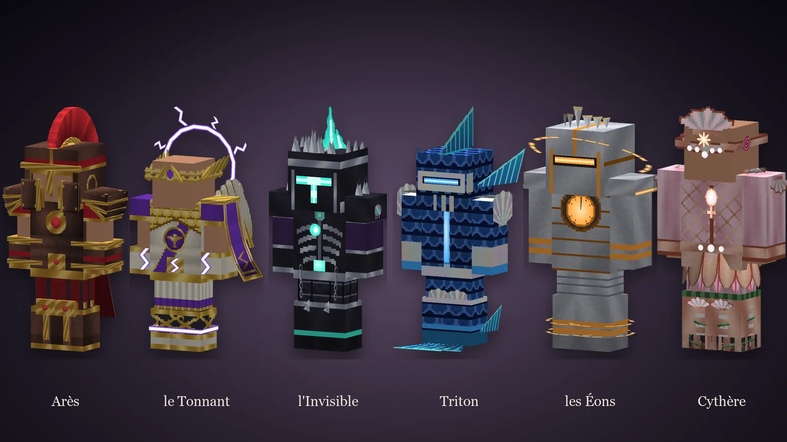

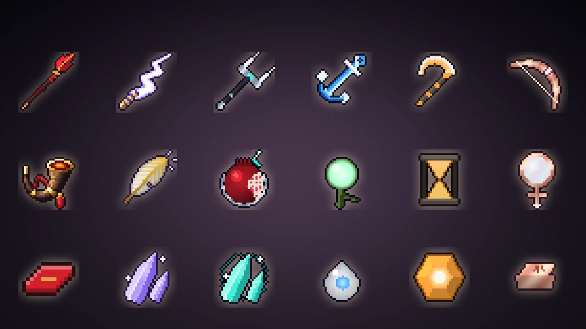

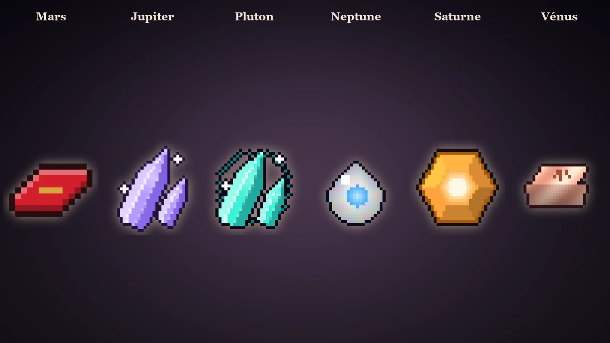

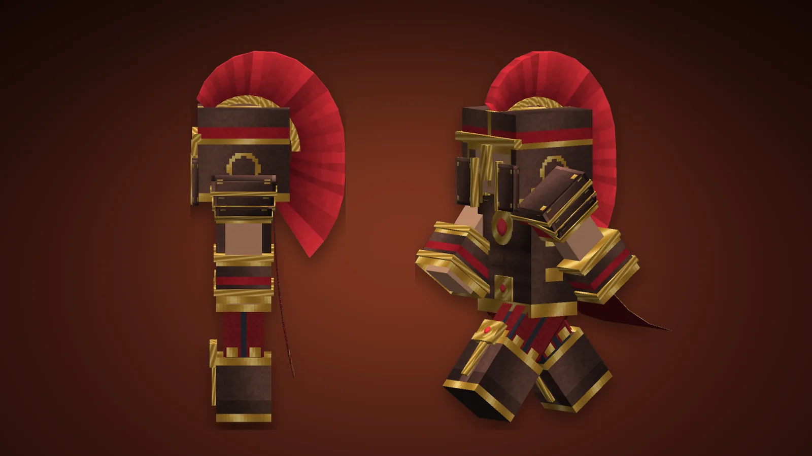

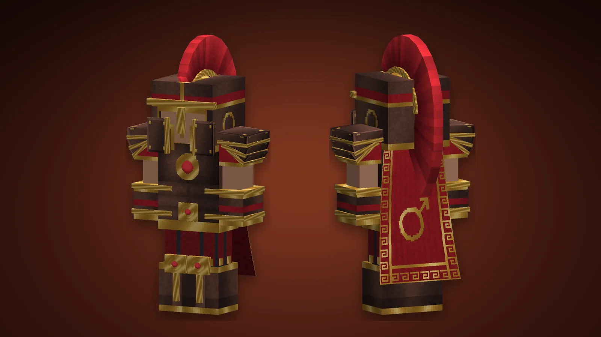

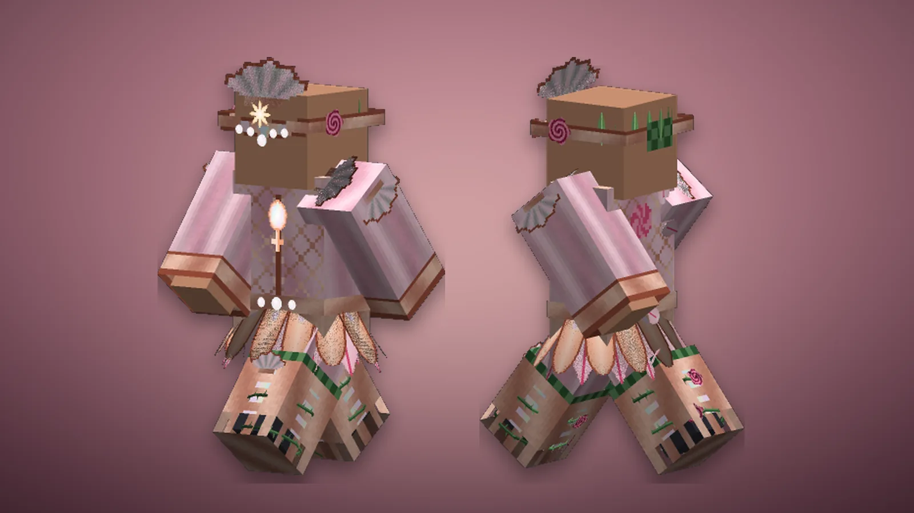

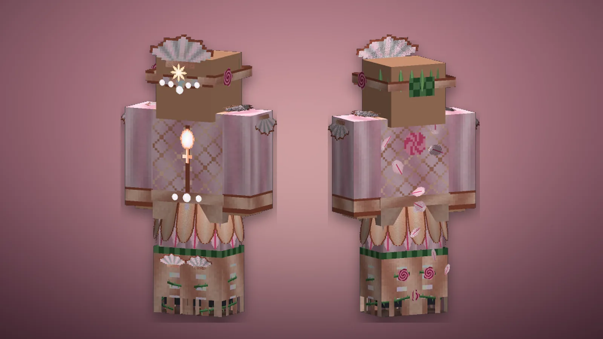

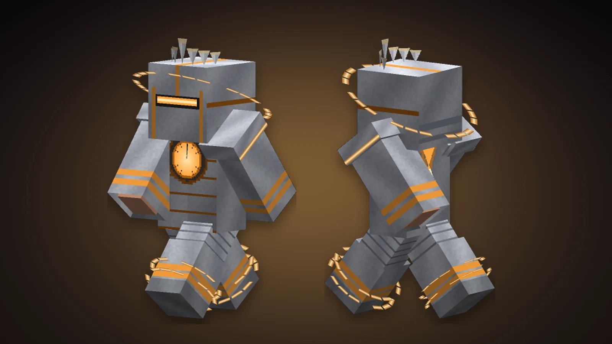

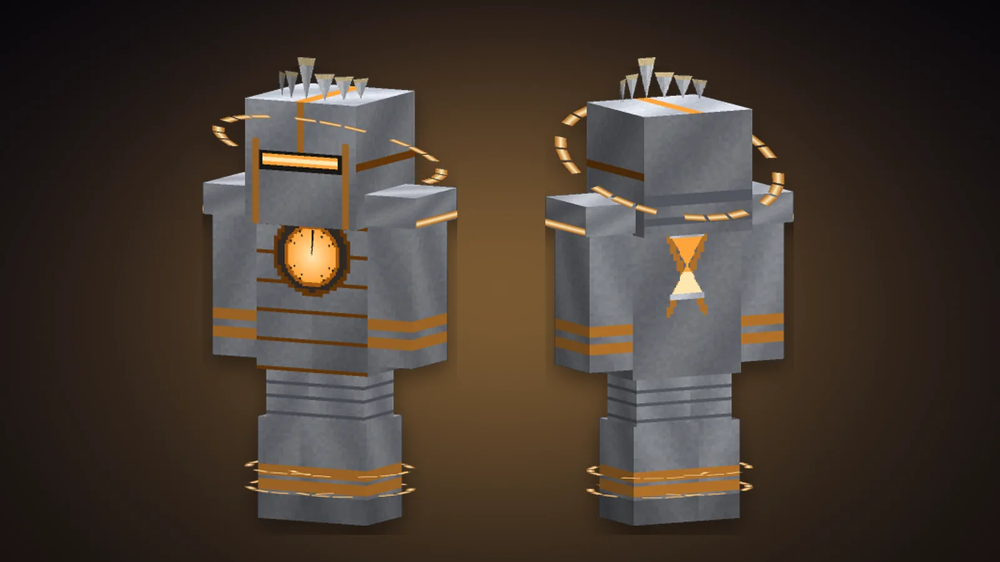

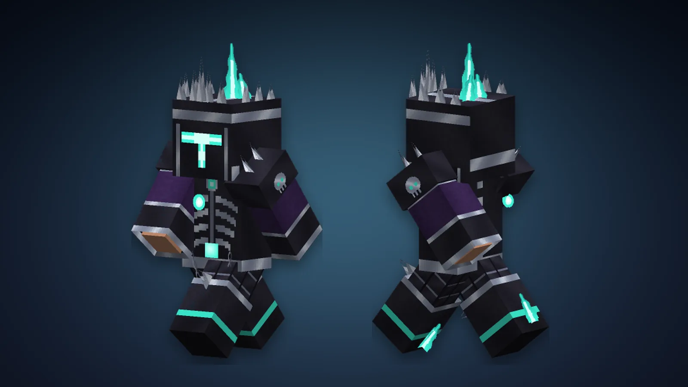

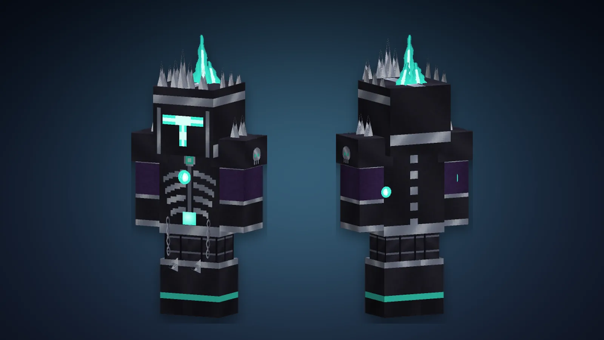

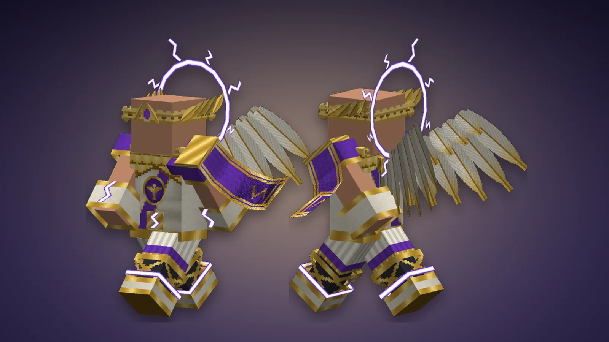

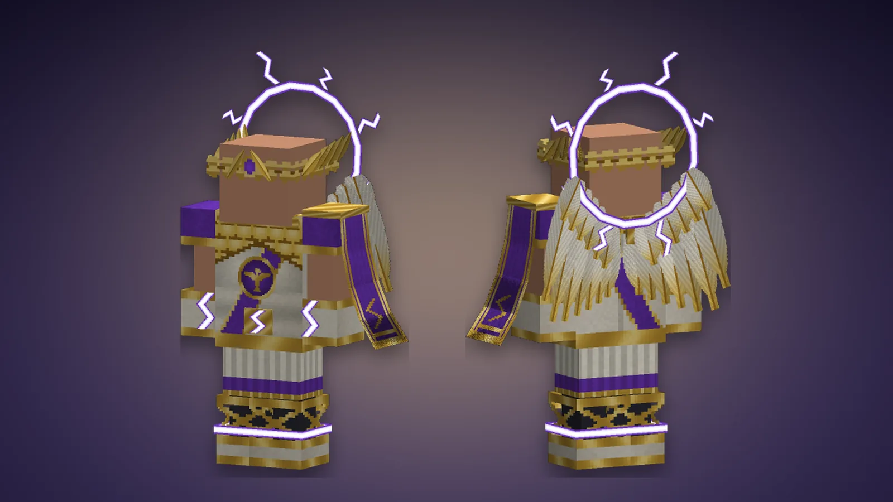

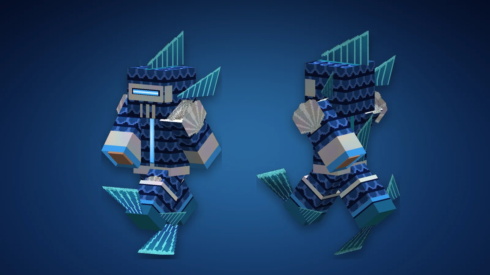

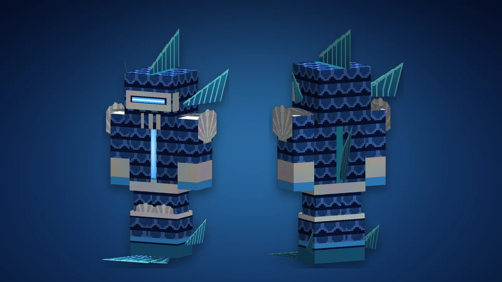
Un dieu se place dans le slot divin, à gauche des slots de reliques : il est ouvert dès le premier jour et n'accepte rien d'autre. Un seul dieu à la fois. Son passif est permanent.
Vous devenez le dieu. Tant qu'il est dans le slot, votre skin est remplacé par le sien, pour vous comme pour tous ceux qui vous croisent : peau, vêtements, motifs qui luisent dans le noir, et par-dessus des ornements animés — ailes, cornes, couronnes, halos, anneaux. Votre cape et vos élytres restent les vôtres. En vue à la première personne vous ne voyez que vos bras ; passez en troisième personne (F5) pour voir le reste.
L'acte divin se déclenche avec la touche divine (N) et ne sert qu'une fois par jour de jeu : il revient au lever du jour suivant. Chacun est quelque chose que le jeu ne sait pas faire autrement.
Tout acte commence par l'invocation, deux secondes et demie pendant lesquelles rien ne peut vous toucher : votre caméra sort de vos yeux et fait le tour de vous, le signe du dieu se dessine en lumière au sol, le ciel prend sa couleur et le nom de l'acte s'affiche pour tous les joueurs à 128 blocs. Puis l'acte commence. Rappuyer sur la touche divine pendant un acte qui dure y met fin tout de suite.
Les actes ne blessent et ne déplacent que les monstres : les autres joueurs voient tout et ne subissent rien, sauf s'ils l'ont demandé : la convocation de Jupiter n'emmène que ceux qui cliquent sur « Rejoindre » (la commande /convocation est ouverte à tous). Aucun ne casse le décor ; seul Hier (qui repose des blocs détruits) touche au terrain.
Quand un dieu sort d'un tirage, tout le serveur en est averti et une colonne de lumière marque l'endroit. Un dieu en double se fond au Creuset des Âmes pour 100 essences. Dans la Tour de l'Enfer, les dieux se taisent : ni passif, ni acte, ni apparence tant que dure l'ascension.
Le Soleil et la Lune ont quitté le panthéon. Une relique de l'un ou de l'autre restée dans un inventaire, un slot ou le Reliquaire devient d'elle-même, en deux secondes, l'un des huit dieux restants, tiré au hasard : rien n'est perdu.
| Dieu | Apparence | Passif | Acte divin (1 fois par jour) |
|---|---|---|---|
| Mercure Le messager n'arrive jamais. Il est déjà reparti. | Peau de vif-argent, armure bleu nuit et or, casque et talons ailés, ailes d'or qui battent comme celles d'un colibri, anneau d'or au-dessus de la tête. | vitesse doublée, +50 % de vitesse d'attaque, vous montez les blocs sans sauter, aucun dégât de chute. | Ubiquité : pendant 2 minutes vous êtes neuf. Huit copies de vous se détachent de votre corps et refont chacun de vos gestes : un coup porté est porté neuf fois, un bloc miné est miné neuf fois côte à côte. |
| Vénus On ne lève pas la main sur ce qu'on adore. | Armure de soie rose à fleurs, ailes de papillon, couronne de fleurs, halo rose fleuri, pétales qui tournent autour d'elle. | aucun monstre ne vous prend pour cible, +10 cœurs, vous guérissez sans cesse. | La Voie de Vénus : la voie s'ouvre vers Vénus, la planète de la déesse : sous un voile de brume rose où il pleut des pétales, on arrive dans la Conque, au-dessus d'un lagon d'écume, devant la Perle ; autour, les jardins de Cythère et leurs roses de métal. Vous y restez 5 minutes au plus ; la touche divine vous ramène avant. Les autres joueurs sont invités : qui accepte arrive à vos côtés, et repart avec vous ou avant. |
| Mars La guerre ne lui a jamais rien demandé. Il venait quand même. | Roche noire fendue de lave au cœur brûlant, grandes cornes de fer aux pointes ardentes, crête de feu, ailes de flammes, épaulières à pointes. | dégâts doublés ; chaque ennemi tué explose sur ses voisins et vous rend 3 cœurs. | La Voie de Mars : la voie s'ouvre vers Mars, la planète du dieu : un monde rouge de 2000 blocs, ses canyons, ses volcans et son métal, l'arésite. Vous arrivez au Sanctuaire d'Arès et vous y restez 5 minutes au plus ; la touche divine vous ramène avant. Les autres joueurs sont invités : qui accepte arrive à vos côtés, et repart avec vous ou avant. |
| Jupiter Le ciel a un roi, et il regarde. | Marbre veiné d'or, armure violette et or, couronne royale à pointes, six ailes blanches et or, halo d'où partent des éclairs. | chacun de vos coups foudroie la cible, la foudre frappe aussi quiconque vous touche, et elle ne vous blesse plus. | La Voie de Jupiter : la voie s'ouvre vers Jupiter, la planète du dieu : une mer de nuages de 2000 blocs, la Grande Tache rouge, et au-dessus d'elle des îles de marbre qui portent la kéraunite, la foudre figée. Vous arrivez au Trône et vous y restez 5 minutes au plus ; la touche divine vous ramène avant. Les autres joueurs sont invités : qui accepte arrive à vos côtés, et repart avec vous ou avant. |
| Saturne Le temps lui obéit par habitude. | Corps aux bandes de la planète, deux anneaux qui tournent à la taille avec leurs lunes, horloge en halo dont les aiguilles tournent, grand cadran derrière le dos. | monstres et projectiles ralentis autour de vous ; un coup mortel vous ramène 6 s en arrière, vie comprise (toutes les 90 s). | La Voie de Saturne : la voie s'ouvre vers Saturne, la planète du dieu : on y marche sur ses anneaux de glace, la planète immense au-dessus, ses lunes autour - Mimas, Encelade, Titan, Japet, Pan -, et l'on arrive au Temple de Saturne, au milieu d'un cadran d'horloge. Vous y restez 5 minutes au plus ; la touche divine vous ramène avant. Les autres joueurs sont invités : qui accepte arrive à vos côtés, et repart avec vous ou avant. |
| Uranus Le ciel n'est pas au-dessus. Il est partout où il veut. | Peau de glace, armure au ciel étoilé, les plus grandes ailes d'ange du panthéon, anneau géant dressé sur la tranche, étoiles en orbite. | vous volez librement, sans élytres, et ne prenez aucun dégât de chute. | Le Monde Bascule : pendant 60 s, le « bas » est la direction où vous regardiez. Créatures et objets à 64 blocs tombent vers l'horizon, de plus en plus vite, et s'écrasent contre le premier mur. Vous tombez avec eux, sans vous faire mal ; s'accroupir vous arrête. |
| Neptune La mer ne rend rien. Elle prête. | Écailles bleu profond, couronne de corail, oreilles et bras à nageoires, ailes de dragon des mers, trident d'or plus grand que lui, anneau de marée aux pieds. | sous l'eau vous respirez, voyez et nagez comme un dauphin ; dans l'eau ou sous la pluie, dégâts doublés et guérison continue. | La Voie de Neptune : la voie s'ouvre vers Neptune, la planète du dieu : un océan entier, ses récifs qui luisent, sa forêt de varech, la Grande Tache sombre, et au milieu l'Atlantide sous son dôme de verre, où vous arrivez au pied de la statue de Poséidon. On y respire l'eau. Vous y restez 5 minutes au plus ; la touche divine vous ramène avant. Les autres joueurs sont invités : qui accepte arrive à vos côtés, et repart avec vous ou avant. |
| Pluton Tout le monde finit chez lui. Lui seul peut en sortir. | Crâne aux orbites allumées sous une capuche, cage thoracique sur robe noire, cornes de bélier, ailes de chauve-souris violettes, couronne de feu des âmes. | 30 % des dégâts infligés vous soignent, les morts-vivants vous ignorent, et la mort vous est refusée une fois par minute. | La Voie de Pluton : la voie s'ouvre vers Pluton, la planète du dieu : un monde gelé au bord de la lumière, son Cœur de glace d'azote, ses monts de glace, les Lames du Tartare, et le Styx qui coule jusqu'au Palais d'Hadès, où vous arrivez. Vous y restez 5 minutes au plus ; la touche divine vous ramène avant. Les autres joueurs sont invités : qui accepte arrive à vos côtés, et repart avec vous ou avant. |